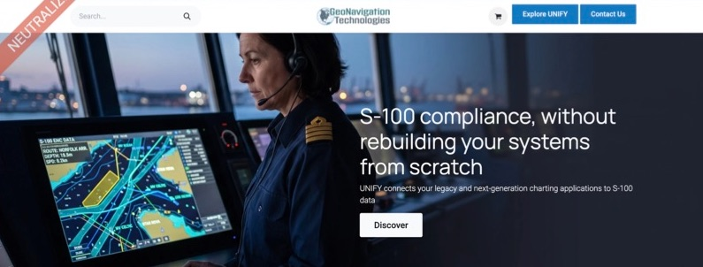
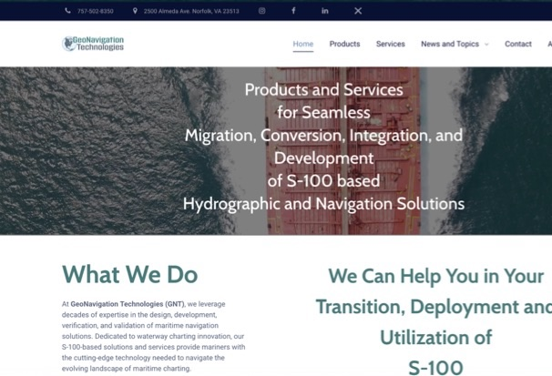
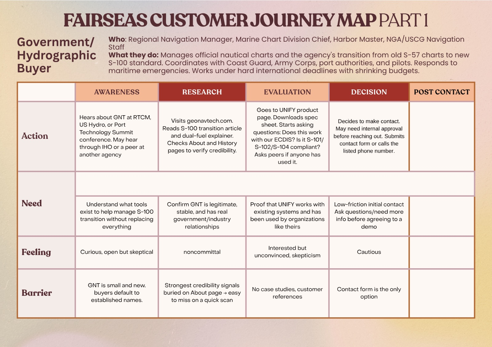
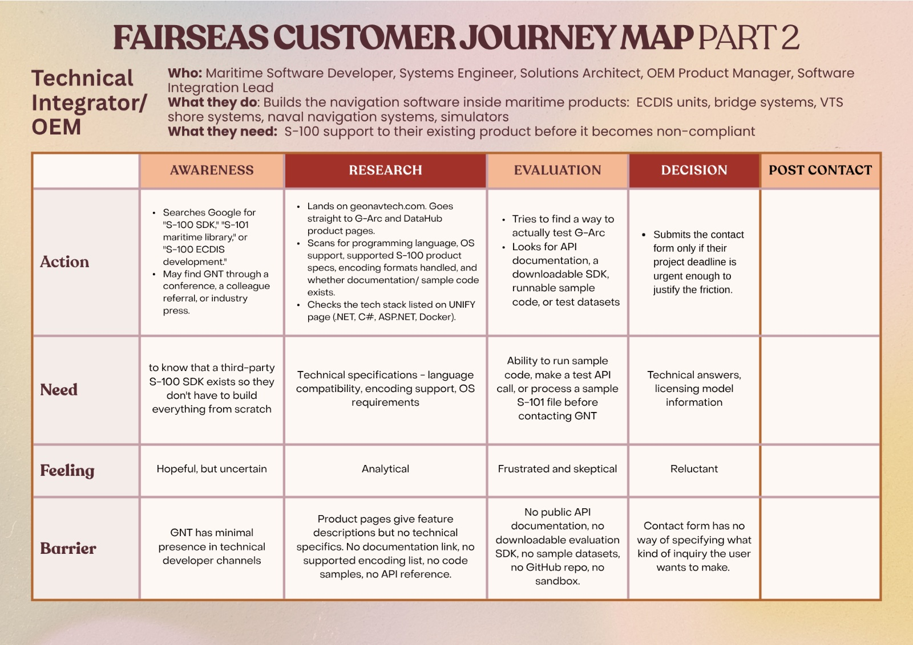
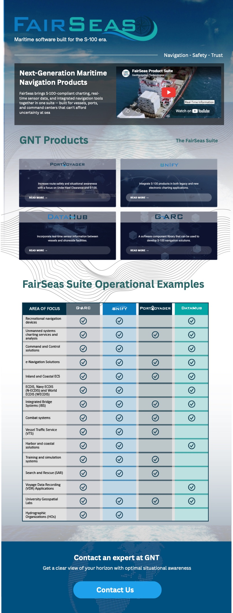
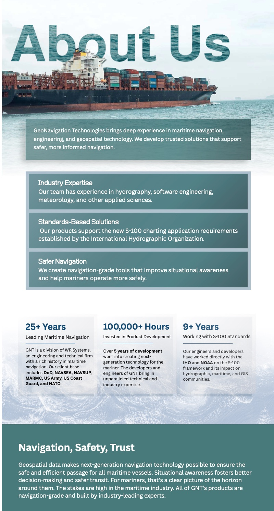
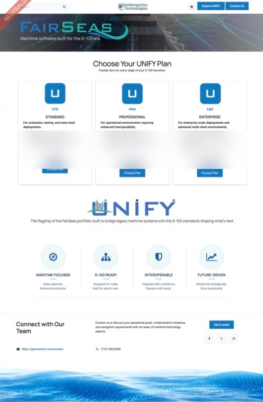
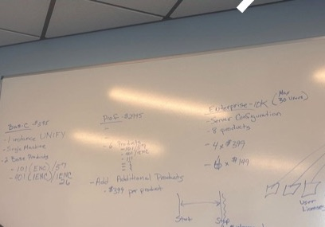
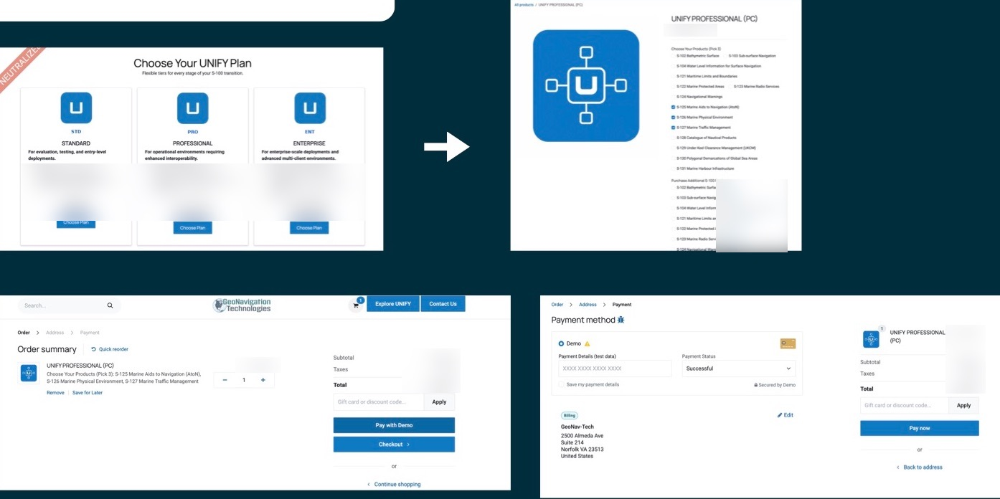

FairSeas: from marketing site to sales funnel
GeoNavigation Technologies (GNT), the maritime software division of WR Systems, had a marketing website but no customer pipeline and no way to buy online, just as a new industry standard put every buyer on a deadline. I researched how buyers actually evaluate maritime software, redesigned the site around their problems, and built pricing and checkout for GNT’s flagship product.
My role: UX audit, journey mapping, web design, and front-end development on Odoo. Selected for the VEDP Global Business Internship Program.

- Timeline
- Jun – Aug 2026
- Program
- VEDP Global Business Internship
- Users
- Government hydrographic buyers and technical integrators
- Tools
- Odoo, HTML/CSS, JavaScript (JSON-RPC)
01 · Context
An industry on a deadline
GNT builds FairSeas, a suite of maritime navigation software. Its flagship, UNIFY, was the only product commercially available.
The timing mattered. S-100, the International Hydrographic Organization’s new universal maritime data standard, became legal to use in January 2026 and becomes mandatory for new installs in January 2029. Every hydrographic office and equipment maker is under a deadline right now.
GNT had identified four commercialization gaps: market awareness, sales enablement, customer engagement and commercial infrastructure. The starting point was a marketing website with no defined customer pipeline and no ecommerce.
02 · UX audit
What I found
- It led with the product, not the outcome. The homepage headline read “Products and Services for Seamless Migration, Conversion, Integration, and Development of S-100 based Hydrographic and Navigation Solutions.”
- It was organized by GNT’s products, not the buyer’s problem. Buyers search by their problem, and often don’t know which product they need yet.
- Real credibility was hidden. GNT’s Navy, NGA, NOAA and IHO Testbed pedigree was buried on an About page visitors rarely open.

03 · Research
Mapping two very different buyers
I built customer journey maps for GNT’s two main segments, following each from awareness to decision.
- Government / hydrographic buyers (chart division chiefs, harbor masters, navigation staff) need proof GNT is legitimate. Their barriers: credibility buried on the About page, no case studies, and a contact form as the only next step.
- Technical integrators / OEMs (developers and engineers building navigation systems) need technical proof before they’ll talk to sales. Their barriers: no API documentation, no evaluation SDK or sample data, and a contact form with no way to say what they need.


04 · Awareness & discovery
Lead with the buyer’s problem
The new homepage leads with the outcome buyers want: “S-100 compliance, without rebuilding your systems from scratch,” with clear Explore UNIFY and Contact Us buttons. A FairSeas product page introduces the whole suite and compares which product fits which use, and the About page now puts GNT’s track record up front: 25+ years in maritime navigation, 100,000+ hours of product development, and 9+ years working with S-100.


05 · Evaluation
Pricing buyers can actually compare
Buyers previously had to contact sales just to learn what UNIFY cost. The team planned the tiers on a whiteboard, and I turned them into a pricing page with three plans (Standard, Professional and Enterprise) so buyers can self-qualify before reaching out.


06 · Intent & purchase
Building the storefront
GNT’s platform, Odoo, couldn’t handle tiered software pricing out of the box. I wrote custom HTML, CSS and JavaScript against Odoo’s JSON-RPC API to add tiered pricing and the cart and checkout behavior UNIFY needed, so buyers can go from choosing a plan to paying in one flow.
I also designed a self-service customer portal for license management, downloads and maintenance renewals.

07 · Impact
Gaps filled
- International reach: international buyers can’t rely on referrals or in-person trust, so they screen vendors entirely online. Visual proof and a clear call to action have an outsized effect on winning business outside the U.S.
- A full funnel: GNT went from a brochure site to a path from discovery through evaluation to purchase.
- What I learned: I started with no marketing background and applied my UX skills to a real commercial pipeline for the first time, building and evaluating every stage of a sales funnel.